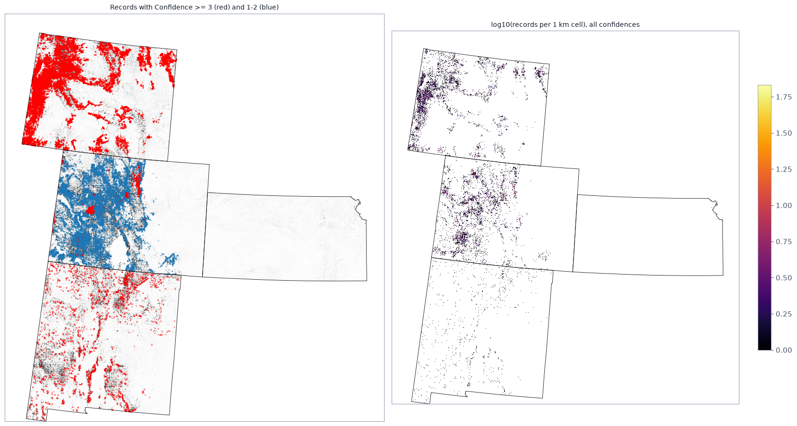
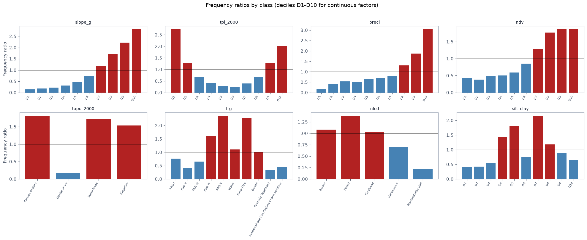
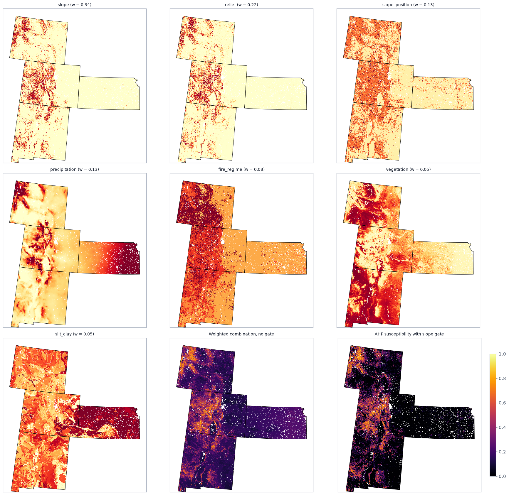
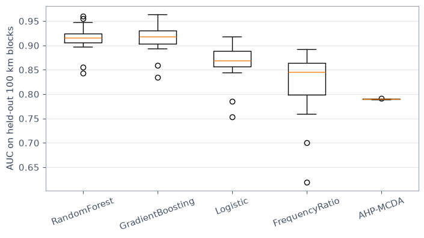
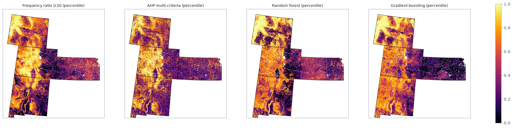
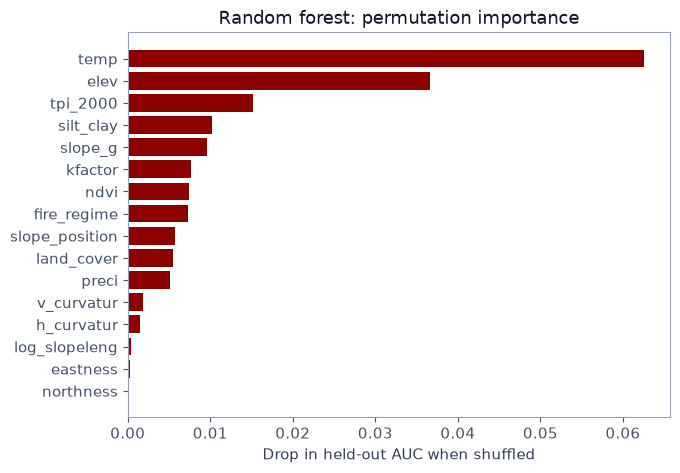
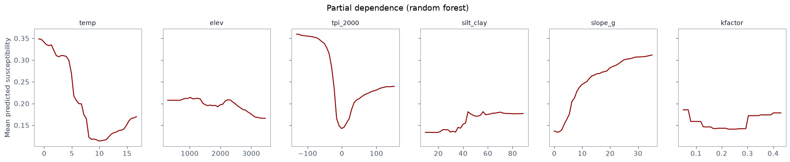
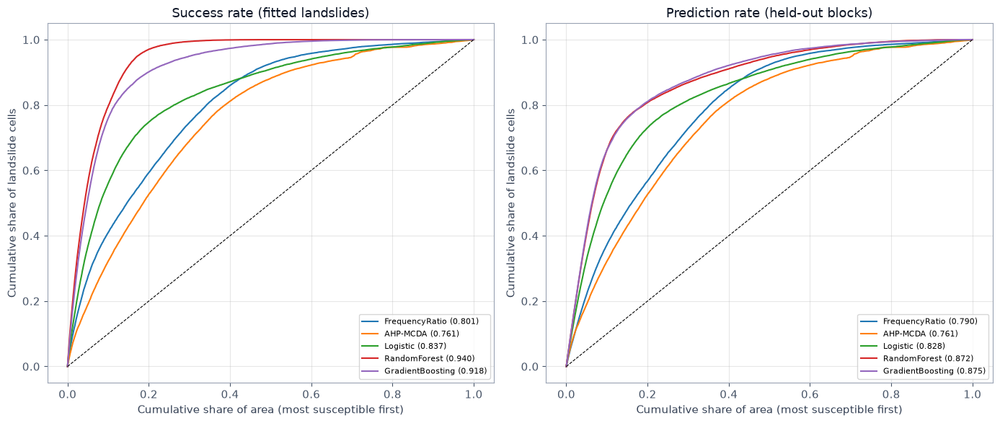
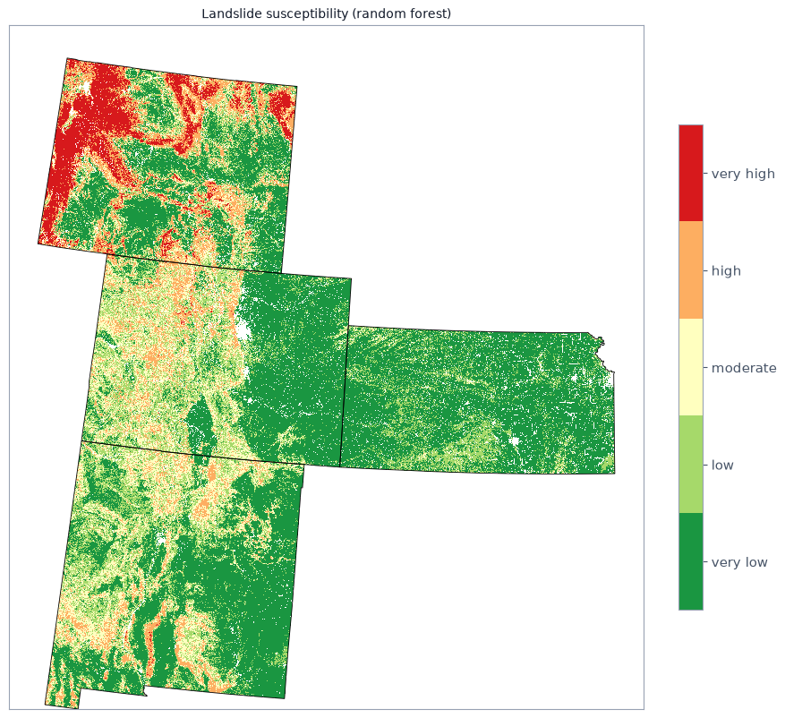
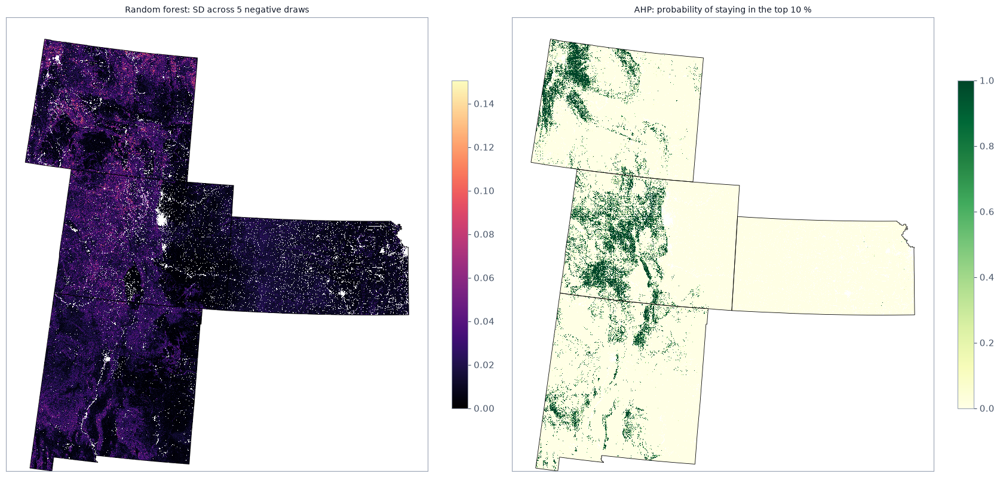

Landslide Susceptibility of the Central and Southern Rocky Mountains and Western Great Plains
This is Capstone 4 of the spatial analysis module (Part 7). It maps where landslides are most likely across Colorado, Wyoming, New Mexico and Kansas, at 1 km, using the Ahmed et al. (2017) covariate grid and the USGS landslide inventory (Belair et al. 2025).
Data:data/Great_plain. The inventory is fetched with download_data.py great_plains.
Study area: about 1,050,000 km² at 1 km.
Library:geolattice.spatial_analysis
Overview
Landslides occur in every U.S. state, and the four states of this capstone, Colorado, Wyoming, New Mexico and Kansas, span the full range of exposure: steep, wildfire-prone mountains in the west and nearly flat plains in the east. A susceptibility map answers one question: where are landslides most likely to occur, given the terrain, climate, soils and vegetation? It says nothing about when, which makes it a planning tool rather than a warning system.
This capstone builds that map at 1 km resolution over about 1,050,000 km², using
the environmental covariate grid assembled for Ahmed et al. (2017), Assessing soil carbon vulnerability in the Western USA by geospatial modeling of pyrogenic and particulate carbon stocks (Journal of Geophysical Research: Biogeosciences 122: 354-369). The paper mapped soil carbon fractions over these four states with random forests on terrain, climate, soil, vegetation and fire-regime covariates. The same covariates, grid and random-forest workflow are reused here for a different response: landslide occurrence;
the USGS Landslide Inventories across the United States, version 3.0 (Belair et al. 2025), as training and test data.
Three families of model are built and compared, following Module 03: a bivariate statistical model (frequency ratio), a knowledge-driven multi-criteria model (AHP-weighted fuzzy overlay) and machine learning (logistic regression, random forest, gradient boosting).
Overview
Stage
Question
Main tools
Covariates
What environmental conditions describe each 1 km cell?
the Ahmed et al. (2017) covariate grid
Inventory
Where have landslides been recorded, and how complete is the record?
USGS inventory v3, confidence filter, state clip
Sampling design
Which cells can serve as non-landslide examples?
surveyed-tile background, exclusion buffer
Model 1: frequency ratio
How much more common are landslides in each class of each factor?
Installation. This notebook needs installation option 2 (core plus spatial analysis): pip install "geolattice[analysis]". See “Installation options” in the GeoLattice README.
Code
# Display matplotlib figures inline in this Jupyter notebook.%matplotlib inline# Standard library imports.import sys # make the capstone helper module importableimport time # report how long the heavier steps takeimport warnings # silence harmless warningsfrom pathlib import Path # filesystem paths# Third-party numeric / geospatial / plotting stack.import geopandas as gpd # state outlines, inventory points, outputsimport matplotlib.pyplot as plt # maps and chartsimport numpy as np # arraysimport pandas as pd # tablesfrom IPython.display import display # rich table previewsfrom scipy import ndimage # exclusion buffers# Machine learning (scikit-learn).from sklearn.ensemble import HistGradientBoostingClassifier, RandomForestClassifierfrom sklearn.inspection import permutation_importancefrom sklearn.linear_model import LogisticRegressionfrom sklearn.metrics import roc_auc_score, roc_curvefrom sklearn.model_selection import GroupKFoldfrom sklearn.pipeline import make_pipelinefrom sklearn.preprocessing import StandardScaler# Shared capstone helpers live next to this notebook.sys.path.insert(0, str(Path.cwd()))import data_processing as dp # paths and helpersimport geolatticeROOT = Path(geolattice.__file__).resolve().parents[1]ifnot (ROOT /"Data").is_dir(): ROOT = dp.find_repo_root()# GeoLattice tools.from geolattice.raster import write_raster_datafrom geolattice.spatial_analysis import ( jaccard_index, # overlap of two top-class masks large, # sigmoid membership, large values -> 1 linear, # linear ramp membership monte_carlo_weights, # Dirichlet weight uncertainty small, # sigmoid membership, small values -> 1 weighted_linear_combination, # weighted linear combination)from geolattice.viz import apply_map_styleapply_map_style()warnings.filterwarnings("ignore", category=RuntimeWarning)warnings.filterwarnings("ignore", category=FutureWarning)pd.set_option("display.precision", 3)RNG = np.random.default_rng(2017) # one seed for every random stepSRC = ROOT /"Data"/"03_spatial_analysis"/"Great_plain"INVENTORY = SRC /"landslides"/"us_landslides_v3_great_plains.csv"OUT = dp.capstone_dir(ROOT, "great_plains_landslides")print(f"Inputs: {SRC}")print(f"Outputs: {OUT}")
Study area. Colorado, Kansas, New Mexico and Wyoming, the study region of Ahmed et al. (2017). Elevation rises from about 200 m in eastern Kansas to more than 4,300 m in the Colorado Rockies. Mean annual precipitation ranges from under 150 mm in the New Mexico basins to over 2,000 mm on the highest ranges.
Landslides in the region are of several kinds: deep-seated slides and earthflows in weak shales of the Colorado Plateau and the Wyoming basins, rockfall and debris flows in the high mountains, and post-wildfire debris flows, which have become a leading hazard in Colorado and New Mexico. This last link to fire is why the fire-regime layer of the soil carbon study is useful here.
Question. Which parts of the four states are most susceptible to landslides, which environmental factors explain the pattern, and how far can a national inventory compiled from many sources be trusted to say so?
The covariate grid
gp_grid_new.csv holds the covariates of Ahmed et al. (2017) at the nodes of a 1 km grid in USA Contiguous Albers Equal Area (NAD83). The terrain layers were derived from the 30 m National Elevation Dataset resampled to 90 m, so each node carries the 90 m value at that point, not a 1 km average.
The grid covers the vegetated land of the paper’s prediction domain: water, developed land and wetlands were excluded, and they are excluded here too.
Code
t0 = time.time()grid = pd.read_csv(SRC /"gp_grid_new.csv")print(f"Grid nodes: {len(grid):,} read in {time.time() - t0:.0f} s")# Lookup tables shipped with the data.frg_names = pd.read_csv(SRC /"Frg_ID.csv").set_index("frg_id")["frg"].to_dict()slope_pos_names = pd.read_csv(SRC /"slope_pos_id.csv").set_index("sp_id")["slope_position"].to_dict()nlcd_names = {3: "Barren", 4: "Forest", 5: "Shrubland", 6: "Herbaceous", 7: "Planted/Cultivated"}# Index every node on a regular 1 km raster.CELL =1000.0XMIN, YMAX = grid.x.min() - CELL /2, grid.y.max() + CELL /2# outer edges; x, y are cell centresgrid["col"] = ((grid.x - grid.x.min()) / CELL).round().astype(int)grid["row"] = ((grid.y.max() - grid.y) / CELL).round().astype(int)NR, NC = grid.row.max() +1, grid.col.max() +1GT = (XMIN, CELL, 0.0, YMAX, 0.0, -CELL)EXTENT = (XMIN, XMIN + NC * CELL, YMAX - NR * CELL, YMAX)states = gpd.read_file(SRC /"GP_STATE.shp")CRS = states.crs # USA Contiguous Albers Equal Area (NAD83)print(f"Raster: {NC} x {NR} cells of {CELL /1000:.0f} km; CRS: {CRS.name}")def to_raster(values, dtype=float):"""Place one value per grid node on the 1 km raster (NaN elsewhere).""" out = np.full((NR, NC), np.nan) out[grid.row.values, grid.col.values] = np.asarray(values, dtype=float)return outdef show(ax, values, title, cmap="viridis", **kw):"""Map one node-level variable with the state outlines.""" im = ax.imshow(to_raster(values), cmap=cmap, extent=EXTENT, interpolation="nearest", **kw) states.boundary.plot(ax=ax, color="black", linewidth=0.6) ax.set_title(title, fontsize=10) ax.set_xticks([]); ax.set_yticks([])return im# Which state is each node in?nodes = gpd.GeoDataFrame(grid[["row", "col"]], geometry=gpd.points_from_xy(grid.x, grid.y), crs=CRS)grid["state"] = gpd.sjoin(nodes, states[["STATE", "geometry"]], how="left", predicate="within")["STATE"].valuesprint(grid.state.value_counts(dropna=False).to_string())
Grid nodes: 1,009,414 read in 1 s
Raster: 1372 x 1547 cells of 1 km; CRS: Albers_Conical_Equal_Area
state
New Mexico 309557
Colorado 256608
Wyoming 244670
Kansas 198420
NaN 159
The USGS compilation brings together inventories from state geological surveys, the USGS, universities and other agencies. Each record carries a Confidence code:
Code
Meaning
1
Possible landslide in the area
2
Probable landslide in the area
3
Likely landslide at or near this location
5
Moderate confidence in the extent or nature of the landslide
8
High confidence in the extent or nature of the landslide
Codes 1 and 2 locate a landslide only to “the area”, often a whole quadrangle or a report region, which is too vague for a 1 km model. Training uses Confidence ≥ 3. All records, including codes 1 and 2, are still used in Section 5 to decide where the region has been surveyed at all.
The inventory is not shipped with the repository. Run python Tutorials/notebooks/03_spatial_analysis/03_07_capston/download_data.py great_plains once; it writes Data/03_spatial_analysis/Great_plain/landslides/us_landslides_v3_great_plains.csv.
Code
ifnot INVENTORY.exists():raiseFileNotFoundError(f"Landslide inventory not found: {INVENTORY.relative_to(ROOT)}\n""Run: python Tutorials/notebooks/03_spatial_analysis/03_07_capston/download_data.py great_plains" )inv = pd.read_csv(INVENTORY, low_memory=False)conf_col =next(c for c in inv.columns if c.lower() =="confidence")src_col =next((c for c in inv.columns if c.lower() =="inventory"), None)inv["confidence"] = pd.to_numeric(inv[conf_col], errors="coerce")# Project to the grid CRS and keep records inside the four states.pts = gpd.GeoDataFrame(inv, geometry=gpd.points_from_xy(inv.longitude, inv.latitude), crs="EPSG:4326").to_crs(CRS)pts = gpd.sjoin(pts, states[["STATE", "geometry"]], how="inner", predicate="within").drop(columns="index_right")pts["col"] = np.floor((pts.geometry.x - XMIN) / CELL).astype(int)pts["row"] = np.floor((YMAX - pts.geometry.y) / CELL).astype(int)print(f"Records inside the four states: {len(pts):,}")summary = pd.crosstab(pts.STATE, pts.confidence, margins=True, margins_name="total")display(summary)if src_col: top_src = pts[src_col].value_counts().head(12).rename("records") display(top_src.to_frame())
Records inside the four states: 69,031
confidence
1
2
3
5
8
total
STATE
Colorado
10064
18618
137
11
2895
31725
Kansas
0
4
0
0
0
4
New Mexico
1
15
3435
12
0
3463
Wyoming
4
41
49
33744
1
33839
total
10069
18678
3621
33767
2896
69031
records
Inventory
WY WSGS
33741
CO GS
28517
USGS Conterminous
3445
USGS CO Front Range Sept 2013
1350
USGS CO Front Range July 1999
806
Western CO (Regmi and others, 2010)
734
NASA
239
UT GRC
111
USGS Post-Fire Debris Flows
70
AZ GS
12
USGS Seismogenic Mass Movements
6
Code
# Cells with at least one record, before and after the confidence filter.cell_id = grid.row.values * NC + grid.col.valuesnode_of_cell = pd.Series(np.arange(len(grid)), index=cell_id)def node_hits(df): ids = (df.row * NC + df.col).values ids = ids[np.isin(ids, node_of_cell.index)]return np.bincount(node_of_cell.loc[ids].values, minlength=len(grid))grid["n_all"] = node_hits(pts)grid["n_conf3"] = node_hits(pts[pts.confidence >=3])grid["landslide"] = (grid.n_conf3 >0).astype(int)fig, axes = plt.subplots(1, 2, figsize=(17, 9))show(axes[0], grid.slope_g, "Records with Confidence >= 3 (red) and 1-2 (blue)", "Greys", vmax=40)low = pts[pts.confidence <3]high = pts[pts.confidence >=3]axes[0].scatter(low.geometry.x, low.geometry.y, s=1, c="tab:blue", alpha=0.4)axes[0].scatter(high.geometry.x, high.geometry.y, s=1, c="red", alpha=0.4)dens = np.where(grid.n_all >0, np.log10(grid.n_all), np.nan)im = show(axes[1], dens, "log10(records per 1 km cell), all confidences", "inferno")plt.colorbar(im, ax=axes[1], fraction=0.035)plt.tight_layout()plt.show()by_state = grid.groupby("state").agg(cells=("landslide", "size"), landslide_cells=("landslide", "sum"))by_state["landslide_cells_per_1000_km2"] =1000* by_state.landslide_cells / by_state.cellsdisplay(by_state)

cells
landslide_cells
landslide_cells_per_1000_km2
state
Colorado
256608
780
3.040
Kansas
198420
0
0.000
New Mexico
309557
3256
10.518
Wyoming
244670
19708
80.549
Reading the inventory. Compare the density of landslide cells between the states with what their terrain would suggest. In a national compilation, each state’s share reflects which surveys were digitised and contributed as much as how many landslides occurred, so blank areas mix true absence of landslides with absence of mapping. This is the most important property of the training data, and Section 5 is designed around it.
Sampling design
A susceptibility model learns by comparing landslide cells with non-landslide cells. Where nobody looked, a cell without a record is not evidence of stability, and sampling it as a negative teaches the model that unsurveyed terrain is safe. Three rules reduce that bias:
Surveyed tiles only. The region is divided into 50 km tiles. Negatives are drawn only from tiles that contain at least one inventory record of any confidence, a simple form of the target-group background used in species distribution modelling.
Exclusion buffer. Cells within 2 km of a landslide cell are not used as negatives, because records are positioned only to within a few hundred metres and landslide clusters extend beyond mapped points.
Several draws. Five independent negative samples, each twice the number of landslide cells, are drawn; models are fitted to each and averaged.
\(FR > 1\) means landslides are more common than average in the class. The landslide susceptibility index of a cell is the sum of the log frequency ratios of its classes across all factors, \(LSI = \sum_i \ln FR_{ij}\). The method is transparent, needs no model fitting, and is a standard baseline in landslide studies.
Continuous factors are split into deciles; categorical factors use their classes. Frequency ratios are computed on surveyed tiles only, for the reason given in Section 5.
Code
FR_CONT = ["slope_g", "tpi_2000", "elev", "preci", "temp", "ndvi", "silt_clay", "kfactor", "v_curvatur", "h_curvatur"]FR_CAT = ["topo_2000", "nlcd", "frg"]def fr_classes(df):"""Class label of every node for every factor (deciles for continuous factors).""" cls = {}for f in FR_CONT: edges = np.unique(np.nanquantile(grid.loc[grid.surveyed, f], np.linspace(0, 1, 11))) cls[f] = np.clip(np.searchsorted(edges, df[f].values, side="right") -1, 0, len(edges) -2)for f in FR_CAT: cls[f] = df[f].values.astype(int)return clsCLS = fr_classes(grid)def fr_tables(train_mask):"""Frequency-ratio table for every factor, from the nodes in ``train_mask`` (surveyed only).""" m = train_mask & grid.surveyed.values y = grid.landslide.values[m] tabs = {}for f, c in CLS.items(): cm = c[m] classes = np.unique(c) area = np.array([(cm == k).sum() for k in classes], float) lsn = np.array([y[cm == k].sum() for k in classes], float) fr = ((lsn +0.5) / (y.sum() +0.5)) / ((area +1) / m.sum()) # small offsets avoid log(0) tabs[f] = pd.Series(fr, index=classes)return tabsdef lsi(tabs, idx=slice(None)):"""Landslide susceptibility index (sum of log FR) for the nodes in ``idx``."""returnsum(np.log(tabs[f].reindex(CLS[f][idx]).fillna(1.0).values) for f in tabs)fr_all = fr_tables(np.ones(len(grid), bool))grid["fr_lsi"] = lsi(fr_all)fig, axes = plt.subplots(2, 4, figsize=(20, 8))for ax, f inzip(axes.ravel(), ["slope_g", "tpi_2000", "preci", "ndvi", "topo_2000", "frg", "nlcd", "silt_clay"]): t = fr_all[f]if f =="topo_2000": labels = [slope_pos_names.get(k, k) for k in t.index]elif f =="frg": labels = [str(frg_names.get(k, k)).replace("Fire Regime Group ", "FRG ") for k in t.index]elif f =="nlcd": labels = [nlcd_names.get(k, k) for k in t.index]else: labels = [f"D{k +1}"for k in t.index] ax.bar(range(len(t)), t.values, color=np.where(t.values >1, "firebrick", "steelblue")) ax.axhline(1, color="black", lw=0.8) ax.set_xticks(range(len(t)), labels, rotation=60, ha="right", fontsize=7) ax.set_title(f, fontsize=10)axes[0, 0].set_ylabel("Frequency ratio")axes[1, 0].set_ylabel("Frequency ratio")plt.suptitle("Frequency ratios by class (deciles D1-D10 for continuous factors)", y=1.01)plt.tight_layout()plt.show()

Reading the frequency ratios. Bars above 1 (red) mark classes where landslides are more common than average. Three things to check:
Does the ratio rise steadily through the slope deciles? A clean monotonic rise means slope is behaving as the dominant control.
Do steep slopes and canyon bottoms sit above 1 and gentle slopes below?
Precipitation, NDVI, fire regime and land cover often show strong ratios too. In this region the wet, green, fire-prone land is the mountains, so these bars can repeat the terrain signal through other variables. A bivariate method cannot separate such overlapping effects; Model 3 can.
Model 2: AHP multi-criteria model
A knowledge-driven model encodes what geomorphology says controls slope stability, without fitting it to the inventory. Seven criteria are used:
Criterion
Membership
Reasoning
Slope
large, midpoint 15°, spread 4
Shear stress rises with slope; most slides start on slopes above 15°
Wetter slopes reach failure pore pressures more often
Fire regime
FRG IV 1.0, FRG III 0.7, barren 0.7, FRG V 0.6, FRG I 0.5, FRG II 0.4
Stand-replacing fire in forest (FRG IV) strips the canopy and triggers debris flows; FRG II is mostly grassland, where frequent fire does far less to slope stability
Vegetation (NDVI)
small, midpoint 0.35, spread 4
Roots reinforce soil; sparse cover means weaker slopes
Silt + clay
linear, 20 to 80 %
Fine-grained soils lose strength when wet
A weighted linear combination is compensatory: a flat, wet, clay-rich field in eastern Kansas collects points for precipitation and soil and can score as high as a dry mountain slope, although flat land cannot slide. The combined score is therefore multiplied by a slope gate that is 0 below 2°, rises linearly to 1 at 8°, and leaves steeper land unchanged. This is the hybrid “constraint × score” design of Module 03.04.
Weights come from the Analytic Hierarchy Process (AHP; Saaty 1980). Each pair of criteria is judged on the 1-9 scale (“slope is moderately more important than precipitation” = 3); the weights are the principal eigenvector of the comparison matrix, and the consistency ratio (CR) checks that the judgments do not contradict each other. CR < 0.10 is the usual acceptance threshold.
GeoLattice has no AHP function, so a short one is written here.
Code
CRITERIA = ["slope", "relief", "slope_position", "precipitation", "fire_regime", "vegetation", "silt_clay"]# Upper-triangle judgments: (row criterion, column criterion) -> how much more important row is.JUDGMENTS = { ("slope", "relief"): 2, ("slope", "slope_position"): 3, ("slope", "precipitation"): 3, ("slope", "fire_regime"): 4, ("slope", "vegetation"): 5, ("slope", "silt_clay"): 5, ("relief", "slope_position"): 2, ("relief", "precipitation"): 2, ("relief", "fire_regime"): 3, ("relief", "vegetation"): 4, ("relief", "silt_clay"): 4, ("slope_position", "precipitation"): 1, ("slope_position", "fire_regime"): 2, ("slope_position", "vegetation"): 3, ("slope_position", "silt_clay"): 3, ("precipitation", "fire_regime"): 2, ("precipitation", "vegetation"): 3, ("precipitation", "silt_clay"): 3, ("fire_regime", "vegetation"): 2, ("fire_regime", "silt_clay"): 2, ("vegetation", "silt_clay"): 1,}RANDOM_INDEX = {1: 0.0, 2: 0.0, 3: 0.58, 4: 0.90, 5: 1.12, 6: 1.24, 7: 1.32, 8: 1.41, 9: 1.45, 10: 1.49}def ahp(criteria, judgments):"""AHP weights (principal eigenvector) and consistency ratio for a reciprocal matrix.""" n =len(criteria) A = np.ones((n, n))for (a, b), v in judgments.items(): i, j = criteria.index(a), criteria.index(b) A[i, j], A[j, i] = v, 1.0/ v vals, vecs = np.linalg.eig(A) k = np.argmax(vals.real) w = np.abs(vecs[:, k].real) w = w / w.sum() ci = (vals[k].real - n) / (n -1)return pd.Series(w, index=criteria), A, ci / RANDOM_INDEX[n]W_AHP, A_MATRIX, CR = ahp(CRITERIA, JUDGMENTS)display(pd.DataFrame(A_MATRIX, index=CRITERIA, columns=CRITERIA).round(2))display(W_AHP.rename("weight").to_frame())print(f"Consistency ratio: {CR:.3f} ({'acceptable'if CR <0.10else'revise the judgments'})")
Share of cells closed by the slope gate (< 2 deg): 44%

Model 3: machine learning
Predictors
The predictors are the covariates of Ahmed et al. (2017). Aspect is turned into northness (\(\cos\)) and eastness (\(\sin\)) so that 359° and 1° are neighbours; flat cells get 0 for both. Slope length is log-transformed. The three categorical layers (slope position, land cover, fire regime) are one-hot encoded.
The paper reports strong correlation between elevation, temperature, precipitation and NDVI. As in the paper, all are kept: tree ensembles handle correlated predictors, and the logistic model is used only as a reference.
Landslides cluster, so a random split puts near-identical neighbours in training and test sets and inflates the scores. Here folds are 100 km blocks: a model is always tested on blocks it never saw. Each of the five negative draws is cross-validated, and out-of-fold predictions are kept for validation in Section 10.
Code
def make_models():return {"Logistic": make_pipeline(StandardScaler(), LogisticRegression(C=1.0, max_iter=3000)),"RandomForest": RandomForestClassifier(n_estimators=200, min_samples_leaf=5, max_features="sqrt", n_jobs=-1, random_state=1),"GradientBoosting": HistGradientBoostingClassifier(max_depth=6, learning_rate=0.08, max_iter=250, random_state=1), }def tss_max(y, p): fpr, tpr, _ = roc_curve(y, p)returnfloat(np.max(tpr - fpr))MODEL_NAMES =list(make_models())oof = {m: np.full((N_DRAWS, len(grid)), np.nan) for m in MODEL_NAMES} # out-of-fold predictionsoof_fr = np.full((N_DRAWS, len(grid)), np.nan) # frequency ratio, refitted on training foldsrows = []t0 = time.time()for d, neg inenumerate(neg_draws): idx = np.r_[pres_idx, neg] y = y_all[idx] groups = grid.block.values[idx]for k, (tr, te) inenumerate(GroupKFold(n_splits=N_FOLDS).split(idx, y, groups)):if y[te].sum() ==0or y[tr].sum() ==0:continuefor name, model in make_models().items(): p = model.fit(XA[idx[tr]], y[tr]).predict_proba(XA[idx[te]])[:, 1] oof[name][d, idx[te]] = p rows.append((d, k, name, roc_auc_score(y[te], p), tss_max(y[te], p)))# Frequency ratio from the training blocks only. train_mask =~np.isin(grid.block.values, np.unique(groups[te])) p_fr = lsi(fr_tables(train_mask), idx[te]) oof_fr[d, idx[te]] = p_fr rows.append((d, k, "FrequencyRatio", roc_auc_score(y[te], p_fr), tss_max(y[te], p_fr)))# The AHP model uses no training data: score it on the same test rows. rows.append((d, -1, "AHP-MCDA", roc_auc_score(y, grid.mcda.values[idx]), tss_max(y, grid.mcda.values[idx])))cv = pd.DataFrame(rows, columns=["draw", "fold", "model", "AUC", "TSS"])print(f"Cross-validation: {len(cv)} scores in {time.time() - t0:.0f} s")perf = cv.groupby("model")[["AUC", "TSS"]].agg(["mean", "std"]).sort_values(("AUC", "mean"), ascending=False)display(perf.round(3))fig, ax = plt.subplots(figsize=(8, 4))order = perf.index.tolist()ax.boxplot([cv[(cv.model == m) & (cv.fold >=0)].AUC if m !="AHP-MCDA"else cv[cv.model == m].AUC for m in order])ax.set_xticks(range(1, len(order) +1), order)ax.set_ylabel("AUC on held-out 100 km blocks")ax.grid(axis="y", alpha=0.3)plt.xticks(rotation=20)plt.show()
Cross-validation: 105 scores in 78 s
AUC
TSS
mean
std
mean
std
model
RandomForest
0.915
0.026
0.692
0.063
GradientBoosting
0.915
0.028
0.688
0.064
Logistic
0.867
0.037
0.604
0.072
FrequencyRatio
0.824
0.064
0.525
0.080
AHP-MCDA
0.790
0.001
0.468
0.002

Reading the cross-validation. The fold-to-fold spread is as informative as the mean. Blocks differ in landform, climate and, above all, in how they were mapped, so a model that does well on average can still miss whole regions. The AHP model’s AUC is computed on all sampled cells because it was never fitted; it is directly comparable with the held-out scores of the other models.
Final models and susceptibility maps
Each machine-learning model is refitted on all data for every negative draw and applied to all 1 million cells; the five predictions are averaged. The random forest, the method of Ahmed et al. (2017), is the headline model; gradient boosting and logistic regression are kept for comparison.
Code
t0 = time.time()pred = {name: np.zeros(len(grid)) for name in MODEL_NAMES}rf_draws = [] # random-forest predictions per draw, for the uncertainty mapfitted_rf = []for d, neg inenumerate(neg_draws): idx = np.r_[pres_idx, neg]for name, model in make_models().items():if name =="RandomForest": model.set_params(n_estimators=150) model.fit(XA[idx], y_all[idx]) p = model.predict_proba(XA)[:, 1] pred[name] += p / N_DRAWSif name =="RandomForest": rf_draws.append(p.astype(np.float32))if d ==0: fitted_rf.append((model, idx))for name in MODEL_NAMES: grid[f"p_{name}"] = pred[name]print(f"Final fits and predictions in {time.time() - t0:.0f} s")fig, axes = plt.subplots(1, 4, figsize=(24, 8))maps = [("fr_lsi", "Frequency ratio (LSI)"), ("mcda", "AHP multi-criteria"), ("p_RandomForest", "Random forest"), ("p_GradientBoosting", "Gradient boosting")]for ax, (col, title) inzip(axes, maps): v = grid[col].rank(pct=True) # percentile rank puts all four on one scale im = show(ax, v, f"{title} (percentile)", "inferno", vmin=0, vmax=1)plt.colorbar(im, ax=axes, fraction=0.012)plt.show()rank_corr = grid[[c for c, _ in maps] + ["p_Logistic"]].corr(method="spearman")display(rank_corr.round(2))
Final fits and predictions in 24 s

fr_lsi
mcda
p_RandomForest
p_GradientBoosting
p_Logistic
fr_lsi
1.00
0.82
0.81
0.70
0.74
mcda
0.82
1.00
0.72
0.66
0.54
p_RandomForest
0.81
0.72
1.00
0.82
0.59
p_GradientBoosting
0.70
0.66
0.82
1.00
0.37
p_Logistic
0.74
0.54
0.59
0.37
1.00
Comparing the maps. Percentile ranks put the four models on one scale. Expect broad agreement on the extremes: the mountain ranges high, the High Plains low. The Spearman table shows how far the rankings agree overall; the interesting differences usually lie at intermediate elevations, where rules of thumb (Model 2) and the inventory (Models 1 and 3) can disagree about moderately steep, dry slopes.
What drives susceptibility?
Permutation importance measures how much the held-out AUC of the random forest falls when one predictor is shuffled. One-hot columns of the same layer are shuffled together so that each layer is judged as a whole. Partial dependence shows the average modelled response to one predictor, as Ahmed et al. (2017) did for soil carbon.
Code
model, idx_fit = fitted_rf[0]# Use a held-out block set: refit on four folds, score the fifth.idx = np.r_[pres_idx, neg_draws[0]]groups = grid.block.values[idx]tr, te =next(GroupKFold(n_splits=N_FOLDS).split(idx, y_all[idx], groups))rf_imp = make_models()["RandomForest"].fit(XA[idx[tr]], y_all[idx[tr]])layers_of = {c: c for c in X_num.columns}layers_of.update({c: "slope_position"for c in X_cat.columns if c.startswith("pos_")})layers_of.update({c: "land_cover"for c in X_cat.columns if c.startswith("lc_")})layers_of.update({c: "fire_regime"for c in X_cat.columns if c.startswith("frg_")})Xte, yte = XA[idx[te]].copy(), y_all[idx[te]]base = roc_auc_score(yte, rf_imp.predict_proba(Xte)[:, 1])imp = {}for layer indict.fromkeys(layers_of.values()): cols = [FEATURES.index(c) for c, l in layers_of.items() if l == layer] drops = []for rep inrange(3): Xp = Xte.copy() perm = RNG.permutation(len(Xp)) Xp[:, cols] = Xp[perm][:, cols] drops.append(base - roc_auc_score(yte, rf_imp.predict_proba(Xp)[:, 1])) imp[layer] = np.mean(drops)imp = pd.Series(imp).sort_values(ascending=False)print(f"Held-out AUC of this fit: {base:.3f}")fig, ax = plt.subplots(figsize=(7, 5))ax.barh(imp.index[::-1], imp.values[::-1], color="darkred")ax.set_xlabel("Drop in held-out AUC when shuffled")ax.set_title("Random forest: permutation importance")plt.show()
Held-out AUC of this fit: 0.959

Code
top = [c for c in imp.index if c in X_num.columns][:6]fig, axes = plt.subplots(1, len(top), figsize=(3.6*len(top), 3.4), sharey=True)sample = XA[RNG.choice(len(grid), 4000, replace=False)]for ax, name inzip(axes, top): j = FEATURES.index(name) xs = np.linspace(*np.nanpercentile(XA[:, j], [1, 99]), 40) resp = []for v in xs: Xs = sample.copy() Xs[:, j] = v resp.append(model.predict_proba(Xs)[:, 1].mean()) ax.plot(xs, resp, color="darkred") ax.set_title(name, fontsize=10)axes[0].set_ylabel("Mean predicted susceptibility")plt.suptitle("Partial dependence (random forest)", y=1.04)plt.show()

Compare the ranking with Table 1 and Figure 5 of Ahmed et al. (2017). There, NDVI, precipitation, temperature and elevation explained soil carbon; here the terrain variables should dominate, because landslides are a mechanical process. Where climate and vegetation still rank high, they act largely as stand-ins for the mountain environment, and partly for where inventories were compiled (Section 13).
Validation of all models
Two curves are standard in landslide studies (Chung and Fabbri 2003):
the success-rate curve uses the landslides the model was fitted on and measures goodness of fit;
the prediction-rate curve uses landslides the model did not see and measures predictive skill.
Cells are ranked from most to least susceptible; the curve plots the cumulative share of landslide cells against the cumulative share of area. A curve that rises steeply means a small fraction of the land captures most landslides. The area under the prediction-rate curve is the headline comparison.
Prediction-rate curves use out-of-fold predictions (averaged over draws) and are computed within surveyed tiles, where absence of a record means something.
Code
def rate_curve(score, mask):"""Cumulative share of landslide cells vs cumulative share of area, ranked by score.""" s, y = score[mask], y_all[mask] order = np.argsort(-s, kind="stable") cum_ls = np.cumsum(y[order]) / y.sum() cum_area = np.arange(1, len(s) +1) /len(s)return cum_area, cum_ls, float(np.trapezoid(cum_ls, cum_area))surveyed = grid.surveyed.valuesoof_mean = {m: np.nanmean(oof[m], axis=0) for m in MODEL_NAMES}oof_mean["FrequencyRatio"] = np.nanmean(oof_fr, axis=0)has_oof = np.isfinite(oof_mean["RandomForest"])fig, axes = plt.subplots(1, 2, figsize=(14, 6))curves = []for name, col in [("FrequencyRatio", "fr_lsi"), ("AHP-MCDA", "mcda"), ("Logistic", "p_Logistic"), ("RandomForest", "p_RandomForest"), ("GradientBoosting", "p_GradientBoosting")]: a, l, auc_s = rate_curve(grid[col].values, surveyed) axes[0].plot(a, l, label=f"{name} ({auc_s:.3f})")if name =="AHP-MCDA": a2, l2, auc_p = a, l, auc_s # never fitted: success = predictionelse: m = surveyed & has_oof a2, l2, auc_p = rate_curve(np.nan_to_num(oof_mean[name], nan=-np.inf), m) axes[1].plot(a2, l2, label=f"{name} ({auc_p:.3f})") curves.append({"model": name, "success_rate_AUC": auc_s, "prediction_rate_AUC": auc_p})for ax, title inzip(axes, ["Success rate (fitted landslides)", "Prediction rate (held-out blocks)"]): ax.plot([0, 1], [0, 1], "k--", lw=0.8) ax.set_xlabel("Cumulative share of area (most susceptible first)") ax.set_ylabel("Cumulative share of landslide cells") ax.set_title(title) ax.legend(fontsize=8, loc="lower right") ax.grid(alpha=0.3)plt.tight_layout()plt.show()curves = pd.DataFrame(curves).set_index("model")curves["overfit_gap"] = curves.success_rate_AUC - curves.prediction_rate_AUCdisplay(curves.round(3))

success_rate_AUC
prediction_rate_AUC
overfit_gap
model
FrequencyRatio
0.801
0.790
0.011
AHP-MCDA
0.761
0.761
0.000
Logistic
0.837
0.828
0.009
RandomForest
0.940
0.872
0.068
GradientBoosting
0.918
0.875
0.043
Reading the curves. The gap between success and prediction rate (overfit_gap) is a direct measure of over-fitting. Flexible models fit the training landslides almost perfectly, so their success-rate curves hug the top-left corner; what matters is how much of that survives on unseen blocks. The AHP model has no gap by construction, and its prediction-rate area is the bar the data-driven models must clear to justify their complexity.
Susceptibility classes
Planners use classes, not continuous scores. Classes are set by share of area, so that each model’s classes cover the same land and can be compared directly: very low (lowest 50 %), low (next 20 %), moderate (next 15 %), high (next 10 %) and very high (top 5 %). A good map concentrates landslides in the upper classes, so the landslide density should rise steadily from class to class.
cmap5 = plt.matplotlib.colors.ListedColormap(["#1a9641", "#a6d96a", "#ffffbf", "#fdae61", "#d7191c"])fig, ax = plt.subplots(figsize=(10, 11))im = show(ax, grid.class_RandomForest, "Landslide susceptibility (random forest)", cmap5, vmin=-0.5, vmax=4.5)cb = plt.colorbar(im, ax=ax, fraction=0.035, ticks=range(5))cb.ax.set_yticklabels(CLASS_NAMES)plt.show()area_state = (pd.crosstab(grid.state, grid.class_RandomForest.map(dict(enumerate(CLASS_NAMES))), normalize="index") *100)display(area_state[CLASS_NAMES].round(1).rename_axis(columns="% of state area (random forest)"))area_lc = (pd.crosstab(grid.nlcd.map(nlcd_names), grid.class_RandomForest.map(dict(enumerate(CLASS_NAMES))), normalize="index") *100)display(area_lc[CLASS_NAMES].round(1).rename_axis(columns="% of land-cover area (random forest)"))

% of state area (random forest)
very low
low
moderate
high
very high
state
Colorado
44.7
23.5
21.8
9.8
0.1
Kansas
79.2
18.9
1.9
0.0
0.0
New Mexico
48.6
23.2
20.2
7.9
0.1
Wyoming
33.8
13.1
11.9
20.9
20.4
% of land-cover area (random forest)
very low
low
moderate
high
very high
nlcd
Barren
36.8
11.5
23.2
21.2
7.2
Forest
8.8
30.7
34.1
16.6
9.8
Herbaceous
65.2
18.4
8.4
5.0
3.0
Planted/Cultivated
85.4
11.7
1.7
1.0
0.1
Shrubland
39.0
20.4
18.1
15.6
6.9
Uncertainty
Two sources of uncertainty are quantified:
Training sample (Model 3). Each negative draw gives a slightly different random forest. The standard deviation across the five draws shows where the map depends on which negatives were chosen.
Weights (Model 2).monte_carlo_weights draws 500 weight vectors from a Dirichlet distribution around the AHP weights and reports the spread of the score and how often each cell stays in the top 10 percent.
Code
rf_sd = np.std(np.vstack(rf_draws), axis=0)M = np.stack([MEMBERS[k] for k in CRITERIA])t0 = time.time()M = M * SLOPE_GATE # apply the gate to every criterion so the weighted sum equals the gated scoremc = monte_carlo_weights(M, W_AHP.values, kappa=50.0, n=500, batch=25, top_q=0.9, seed=11)print(f"Monte Carlo weights in {time.time() - t0:.0f} s; median Jaccard of top-10 % sets vs AHP baseline "f"{np.median(mc['jaccard']):.2f}")fig, axes = plt.subplots(1, 2, figsize=(17, 8))im0 = show(axes[0], rf_sd, "Random forest: SD across 5 negative draws", "magma")plt.colorbar(im0, ax=axes[0], fraction=0.035)im1 = show(axes[1], mc["p_top"], "AHP: probability of staying in the top 10 %", "YlGn", vmin=0, vmax=1)plt.colorbar(im1, ax=axes[1], fraction=0.035)plt.tight_layout()plt.show()top_rf = grid.class_RandomForest.values ==4top_mcda = grid["class_AHP-MCDA"].values ==4top_fr = grid.class_FrequencyRatio.values ==4print("Agreement of 'very high' classes (Jaccard):")display(pd.Series({"RF vs AHP": jaccard_index(top_rf, top_mcda), "RF vs FR": jaccard_index(top_rf, top_fr),"AHP vs FR": jaccard_index(top_mcda, top_fr)}).round(2).to_frame("Jaccard"))grid["n_models_very_high"] = top_rf.astype(int) + top_mcda.astype(int) + top_fr.astype(int)
Monte Carlo weights in 43 s; median Jaccard of top-10 % sets vs AHP baseline 0.90

Agreement of 'very high' classes (Jaccard):
Jaccard
RF vs AHP
0.16
RF vs FR
0.30
AHP vs FR
0.35
The Jaccard values show how much the “very high” classes of the three model families overlap; 1 would mean identical sets. Cells rated very high by all three are the most defensible priorities; cells rated very high by only one deserve a second look before they drive a decision.
Where the inventory is likely incomplete
A susceptibility model can also audit its own training data. Kansas is the natural first check: if most of its high-susceptibility land lies in unsurveyed tiles, the low landslide count there says more about mapping than about stability. Cells the random forest rates high or very high but that lie in unsurveyed tiles are places where landslides are probably present but not recorded. Summarising them by state shows where new mapping would add most to the national inventory.
Inventory heterogeneity. The national compilation joins inventories of very different scope, date and method. The surveyed-tile background reduces the bias this causes, but cannot remove it: a tile with one mapped landslide counts as surveyed even if most of it was never examined.
Resolution. A 1 km node carries the 90 m slope at one point. Landslides start on slopes a few tens of metres across, so the map is a regional screen. Site decisions need 10 m terrain and field mapping; the USGS national susceptibility map (Mirus et al. 2024) works at about 10 m.
Mixed landslide types. Rockfall, debris flows, shallow slides and deep-seated slides are modelled together. Their controls differ, and type-specific models would be sharper where the inventory’s LS_Type field is filled.
Missing geology. Lithology and structure strongly control deep-seated landslides in the Colorado Plateau and Wyoming basins, and are not among the covariates. Soil texture and land cover partly stand in for them.
Static covariates. Fire regime describes historical fire, not recent burn scars. Post-fire debris-flow hazard changes year by year and is mapped separately by the USGS for individual fires.
Excluded land. Developed land, water and wetlands are outside the grid, so landslides recorded in towns and along reservoirs do not enter the model.
Ahmed, Z. U., Woodbury, P. B., Sanderman, J., Hawke, B., Jauss, V., Solomon, D., Lehmann, J. (2017). Assessing soil carbon vulnerability in the Western USA by geospatial modeling of pyrogenic and particulate carbon stocks. Journal of Geophysical Research: Biogeosciences, 122, 354-369. https://doi.org/10.1002/2016JG003488
Belair, G. M., Mirus, B. B., Luna, L. V., Jones, E. S. (2025). Landslide Inventories across the United States (ver. 3.0, February 2025). U.S. Geological Survey data release. https://doi.org/10.5066/P14AJF8I
Mirus, B. B., Jones, E. S., Baum, R. L., Godt, J. W., et al. (2020). Landslides across the USA: occurrence, susceptibility, and data limitations. Landslides, 17, 2271-2285.
Mirus, B. B., Belair, G. M., Wood, N. J., Jones, J. M., Martinez, S. N. (2024). Parsimonious high-resolution landslide susceptibility modeling at continental scales. AGU Advances, 5, e2024AV001214.
Saaty, T. L. (1980). The Analytic Hierarchy Process. McGraw-Hill.
Chung, C.-J. F., Fabbri, A. G. (2003). Validation of spatial prediction models for landslide hazard mapping. Natural Hazards, 30, 451-472.
Lee, S., Pradhan, B. (2007). Landslide hazard mapping at Selangor, Malaysia using frequency ratio and logistic regression models. Landslides, 4, 33-41.
Breiman, L. (2001). Random forests. Machine Learning, 45, 5-32.